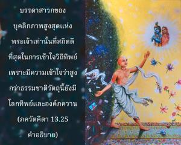

บางคนสำเหนียกองค์อภิวิญญาณภายในตนเองด้วยการทำสมาธิ บางคนสำเหนียกด้วยการพัฒนาความรู้ และยังมีผู้อื่นที่สำเหนียกด้วยการทำงานโดยไม่ต้องการผลทางวัตถุ

องค์ภควานฺทรงให้ข้อมูลแด่ อรฺชุน ว่าพันธวิญญาณผู้เสาะแสวงหาความรู้แจ้งแห่งตนแบ่งออกเป็นสองกลุ่ม คือกลุ่มที่ไม่เชื่อในองค์ภควานฺ ไม่เชื่อว่ามีนรกสวรรค์ และมีความเคลือบแคลงสงสัย บุคคลเหล่านี้ความเข้าใจวิถีทิพย์อยู่เหนือความรู้สึกนึกคิดของพวกตน และมีอีกกลุ่มหนึ่งที่มีความศรัทธาในการเข้าใจชีวิตทิพย์ เรียกว่า สาวกผู้ใคร่ครวญ นักปราชญ์ และผู้ที่ทำงานสละผลทางวัตถุ ผู้ที่พยายามสถาปนาลัทธิความเชื่อว่าเป็นหนึ่งเดียวกันก็นับอยู่ในกลุ่มที่ไม่เชื่อในองค์ภควานฺ และไม่เชื่อในนรกสวรรค์ อีกนัยหนึ่ง บรรดาสาวกของบุคลิกภาพสูงสุดแห่งพระเจ้าเท่านั้นที่สถิตดีที่สุดในการเข้าใจวิถีทิพย์ เพราะมีความเข้าใจว่าสูงกว่าธรรมชาติวัตถุนี้ยังมีโลกทิพย์ และองค์ภควานฺผู้ทรงแบ่งภาคมาเป็น ปรมาตฺมา หรือองค์อภิวิญญาณภายในหัวใจของทุกๆ คน ผู้ทรงแผ่กระจายไปทั่ว แน่นอนว่ามีบุคคลที่พยายามเข้าใจสัจธรรมสูงสุดด้วยการพัฒนาความรู้ซึ่งนับว่าอยู่ในกลุ่มของผู้มีศรัทธา บรรดานักปราชญ์ สางฺขฺย วิเคราะห์โลกวัตถุนี้ว่ามียี่สิบสี่ธาตุ และจัดปัจเจกวิญญาณว่าเป็นรายการที่ยี่สิบห้า เมื่อสามารถเข้าใจธรรมชาติของปัจเจกวิญญาณว่าเป็นทิพย์เหนือธาตุวัตถุต่างๆ พวกนี้ ก็สามารถเข้าใจเช่นกันว่าเหนือไปกว่าปัจเจกวิญญาณยังมีบุคลิกภาพสูงสุดแห่งพระเจ้า พระองค์ทรงเป็นธาตุที่ยี่สิบหก ดังนั้นพวกนี้จะค่อยๆมาถึงมาตรฐานแห่งการอุทิศตนเสียสละรับใช้ในกฺฤษฺณจิตสำนึก พวกที่ทำงานโดยไม่หวังผลทางวัตถุก็มีความสมบูรณ์ในท่าทีของตนเองเช่นกัน และได้รับโอกาสที่จะเจริญก้าวหน้ามาสู่ระดับแห่งการอุทิศตนเสียสละรับใช้ในกฺฤษฺณจิตสำนึก ตรงนี้ได้กล่าวไว้ว่ามีบางคนที่มีจิตสำนึกบริสุทธิ์พยายามค้นหาอภิวิญญาณด้วยการทำสมาธิ และเมื่อค้นพบอภิวิญญาณภายในตนเองแล้วจะสถิตในระดับทิพย์ ในลักษณะเดียวกันมีผู้พยายามเข้าใจดวงวิญญาณสูงสุดด้วยการพัฒนาความรู้ และยังมีผู้ที่พัฒนาระบบ หฐ-โยค และพยายามทำให้บุคลิกภาพสูงสุดแห่งพระเจ้าทรงพอพระทัยด้วยกิจกรรมแบบเด็กๆ